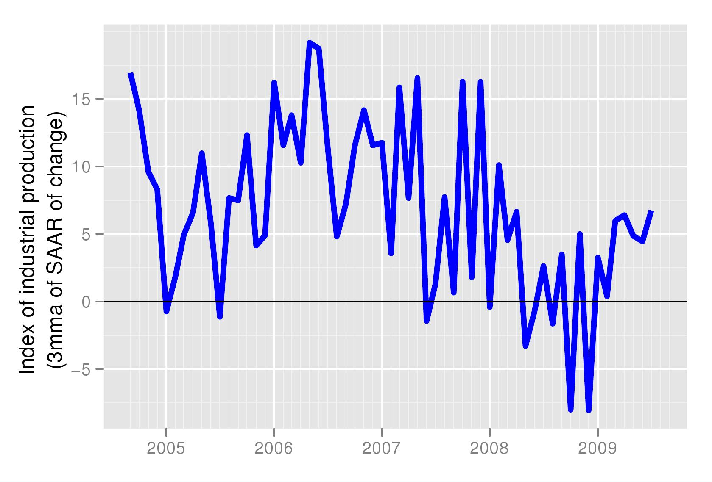
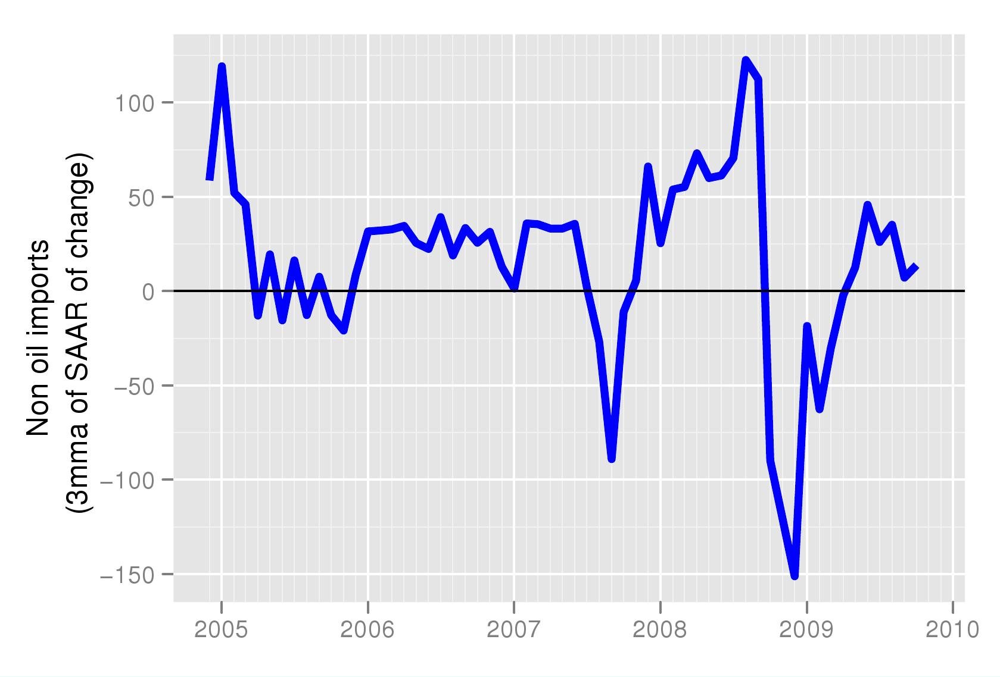
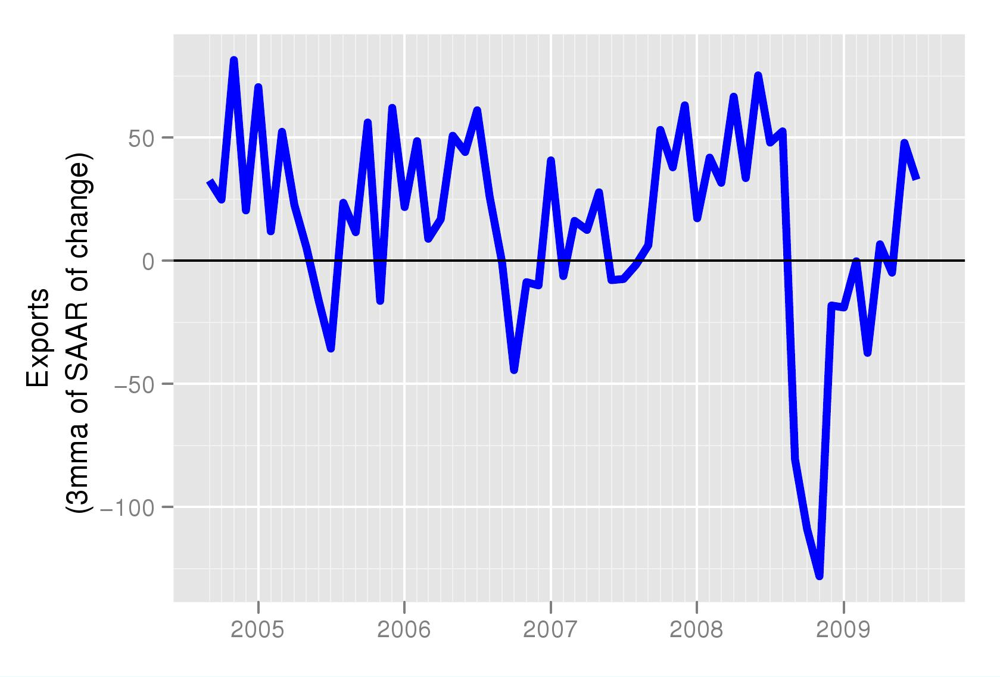
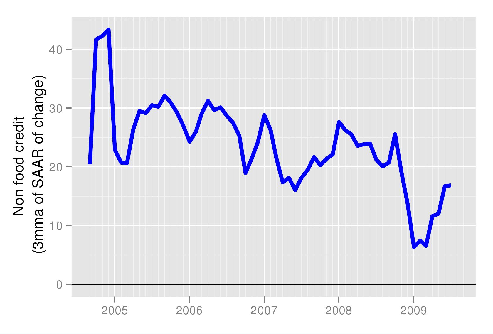

The good news analysed better
Financial Express, 5 October 2009
Signs of recovery are visible in nearly all the macro economic indicators that we monitor. Industrial production, imports, exports and credit conditions have improved in the most recent data.
Since the recovery is recent, the interesting question today is: how does recent behaviour of economic variables today compare to the last few months after the crisis? For examining the most recent behaviour of an economic series we need to look at the month-on-month growth rates. Such growth rates would be able to tell us whether July was better than June. However, like many other economic series, all of these have seasonality. We, therefore, adjust the monthly data for seasonality before analysing the annualised month-on-month growth rate. However, one observation does not make a trend. The figures, therefore, report the three months growth rate of seasonally adjusted exports. Despite some volatility, the acceleration in these series is evident. Further, in all cases the acceleration has been seen for a few months now, suggesting that it may not just be a blip (http://www.mayin.org/cycle.in/).
Figure 1 shows the growth rate of the Index of Industrial Production. As seen in the picture, the peak was in the first half of 2006. The slowdown from high levels of growth of 10 to 15 percent had set in even before the global crisis. The crisis in 2008 made the slowdown much worse pushing it into negative territory, that is actually a shrinking the level of output almost for the first time. While this happends in developed countries which normally have much slower growth rates, in developed countries we normally witness a cycle around a trend growth rate. A decline in output is almost unknown. This scary period now appears to be behind us and we can see a recovery in the month on month growth.
A similar trend is reflected in Figure 2, which shows the month on month growth in non-oil imports. Since the bulk of India's imports are for industrial use, the behaviour of IIP is confirmed by greater imports of non-oil commodities.
The fall in industrial production was associated both with the fall in exports and the decline in investment. The fall in exports was sharp and sudden, both due to the immediate freezing up of trade credit and due to the sharp fall in world demand. Both of these have recovered and for many months now exports have consistently picked up. This is seen in Figure 3.
Finally, Figure 4 shows how non-food credit growth has started recovering in recent months. Until the September credit crisis, this series was growing at above 20 percent on a monthly basis. In the period immediately after the crisis we can see in the figure that it slipped to below 10 percent. It is still below the pre-crisis levels, and below the RBI target of 20 percent, yet it is clear that it has started recovering.
All the above series bring good news. The improvement has come with recovery in global demand and US economic conditions, which at the moment look set to improve further. However, in case the US economy slips back, we should carefully watch this data to monitor the latest behaviour of the Indian economy.
* Seasonally adjusted data and growth rates for important macroeconomic variables are being calculated under the aegis of the NIPFP-DEA program at the National Institute of Public Finance and Policy and data is available for free downloading at http://www.mayin.org/cycle.in/
Back up to Ila Patnaik's media page
Back up to Ila Patnaik's home page